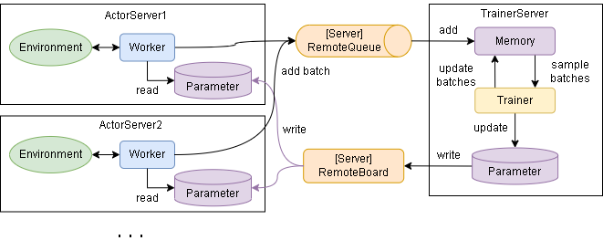
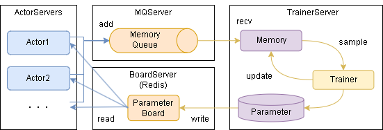

Distributed Learning (Online)
ここではネットワーク経由で学習する方法を説明します。概要は以下です。
各サーバとのやりとりのイメージは以下です。
学習を実行するまでのステップは大きく以下となります。
必要なライブラリのインストール(初回のみ)
Redisサーバの起動
TrainerServer/ActorServerの起動
学習の実施
0. 必要なライブラリのインストール
Redis用のライブラリをインストールします。
$ pip install redis
1. Redisサーバの起動
Redisサーバを用意します。
サンプルにdocker-composeファイルを用意してるので、そちらの起動でも大丈夫です。
（DockerComposeが実行できる環境である必要があります）
$ docker-compose -f examples/distribution/docker-compose.yml up -d
2. TrainerServer/ActorServerの起動
TrainerServerとActorServerを任意のPCで起動します。
基本はTrainerServerは1個、ActorServerは1個以上(actor_num数)の起動を想定しています。
※各TrainerServer/ActorServerでも、EnvとAlgorithmが使用できる必要があります
TrainerServerの起動例です。(examples/distribution/server_trainer.py)
from srl.runner import distribution
from srl.utils import common
def main():
common.logger_print()
memory_params = None
# memory_params = distribution.RabbitMQParameters(host="localhost", ssl=False)
# memory_params = distribution.MQTTParameters(host="localhost")
# memory_params = distribution.GCPParameters(project_id="YOUR_PROJECT_ID")
distribution.trainer_run_forever(distribution.RedisParameters(host="localhost"), memory_params)
if __name__ == "__main__":
main()
ActorServerの起動例です。(examples/distribution/server_actor.py)
from srl.runner import distribution
from srl.utils import common
def main():
common.logger_print()
memory_params = None
# memory_params = distribution.RabbitMQParameters(host="localhost", ssl=False)
# memory_params = distribution.MQTTParameters(host="localhost")
# memory_params = distribution.GCPParameters(project_id="YOUR_PROJECT_ID")
distribution.actor_run_forever(distribution.RedisParameters(host="localhost"), memory_params)
if __name__ == "__main__":
main()
3. 学習の実施
学習のサンプルコードは以下です。Runnerから train_distribution を呼び出すと学習します。
学習後はrunner内のparameterに学習済みデータが入っています。
import srl
from srl.algorithms import ql
from srl.runner.distribution import RedisParameters
from srl.utils import common
def main():
env_config = srl.EnvConfig("Grid")
rl_config = ql.Config()
runner = srl.Runner(env_config, rl_config)
runner.train_distribution(
RedisParameters(host="localhost"),
timeout=30,
progress_interval=5,
)
print(runner.evaluate())
if __name__ == "__main__":
common.logger_print()
main()
非同期で学習を実施する場合は以下です。
'TaskManager'を使うと直接やりとりできます。
import os
import srl
from srl.algorithms import ql
from srl.runner.distribution import RedisParameters
from srl.runner.distribution.server_manager import TaskManager
from srl.utils import common
redis_params = RedisParameters(host="localhost")
checkpoint_dir = os.path.join(os.path.dirname(__file__), "_checkpoint")
history_dir = os.path.join(os.path.dirname(__file__), "_history")
def _create_runner():
env_config = srl.EnvConfig("Grid")
rl_config = ql.Config()
return srl.Runner(env_config, rl_config)
def create_task():
runner = _create_runner()
runner.train_distribution_start(
redis_params,
timeout=60,
)
def wait_task():
task_manager = TaskManager(redis_params)
task_manager.train_wait(
checkpoint_kwargs=dict(save_dir=checkpoint_dir, interval=10),
history_on_file_kwargs=dict(save_dir=history_dir),
)
def eval_task():
task_manager = TaskManager(redis_params)
runner = task_manager.create_runner()
if runner is None:
print("Task not found.")
return
print(runner.evaluate())
def eval_checkpoint():
runner = _create_runner()
runner.load_checkpoint(checkpoint_dir)
print(runner.evaluate())
def view_history():
history = srl.Runner.load_history(history_dir)
history.plot(ylabel_left=["eval_reward0"])
if __name__ == "__main__":
common.logger_print()
create_task()
wait_task()
eval_task()
eval_checkpoint()
view_history()